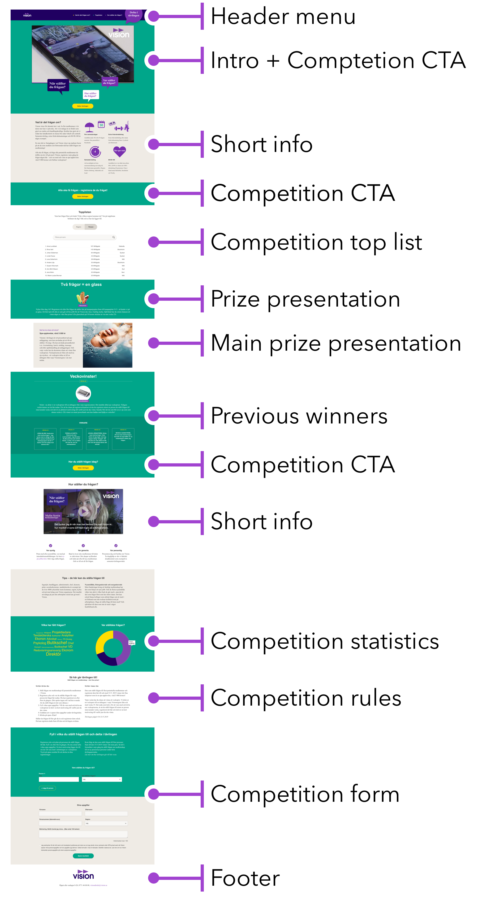

See my work ➜
Vision (a Swedish labor union) wanted a website for their campaign “Alla ska få frågan”. The campaign ran for a month and the goal of the campaign was for existing members of Vision to recruit colleagues to become members. The campaign website included a competition, where existing members could compete about who asked the most colleagues to join Vision. Each week a winner was selected and a prize was awarded. The website also included mixed media information about Vision and why you should join the union.
The main challenge of this project was the short timeframe we were provided. The campaign already had a set date for when it would start and end. To be able to finish the project before the campaign start, it was important to prioritize and strip away non essential elements of the website. Quick communication between me as a designer and the developers was also of importance.
The type of content for the website had not been decided when the design process started. This meant that I had to have close communication with the marketing department and also present suggestions on how we could group and present content in a way that would be easy for a user to digest.
Because of the many different elements on the website, it would be difficult for the user to get a clear overview of all the site features. The most important function of the website is the actual competition, so a number of call to action buttons to join the competition was placed throughout the website, to minimize the risk of users missing the competition part of the website.
The content for the site was lacking during the design phase, so I had the possibility of setting the course for how the information on the website should be presented to the users. I decided to suggest strict rules of content grouping for the website, with checklists, symbols and images. The reasoning for this was to not give the users ‘information overload’ and provide a clear visual hierarchy.
Since the user would be more exploratory rather than going to the website for a specific function, I decided to make the website just one page, to encourage scrolling and exploring the page. This also plays well with mobile devices, where scrolling comes more natural than browsing through a menu.
One of the ways we were able to deliver with within the short timeframe is that I constantly communicated with our developers throughout the process. By doing this, I knew that the design I presented to the customer was technologically easy to develop, which was necessary because of the short timeframe we had for this project.
This is something that probably should have happened more. A few times, important design aspects were lost in the communication between wireframes and developer code. This could have been avoided if the communication between me and the developers could have continued even during the developing phase.
© 2019
Designed, programmed and usability tested by Anton Nyström